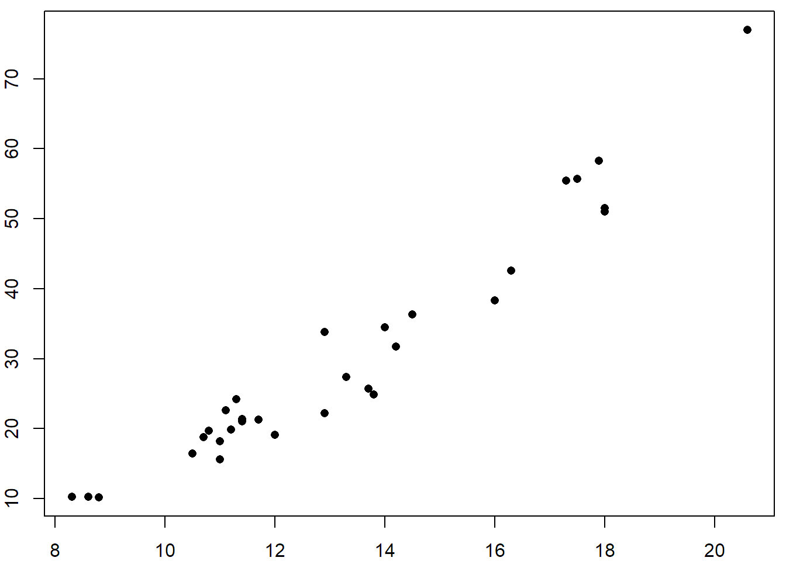
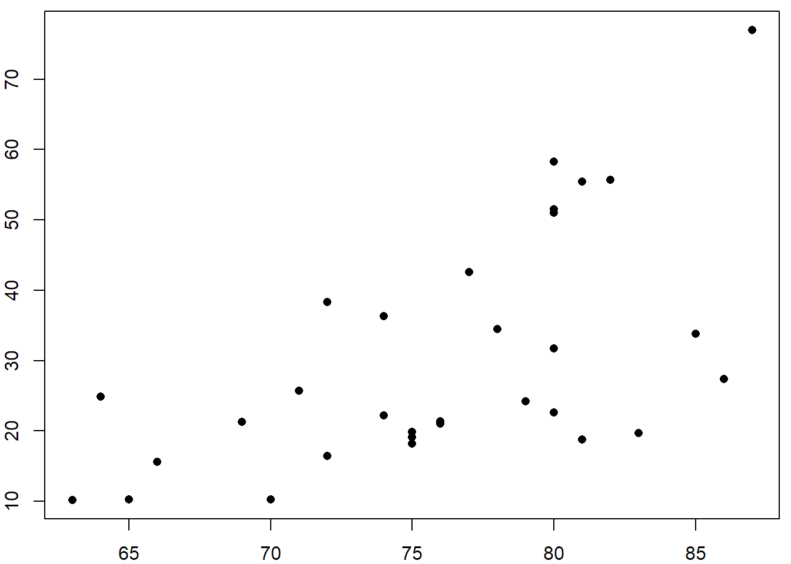
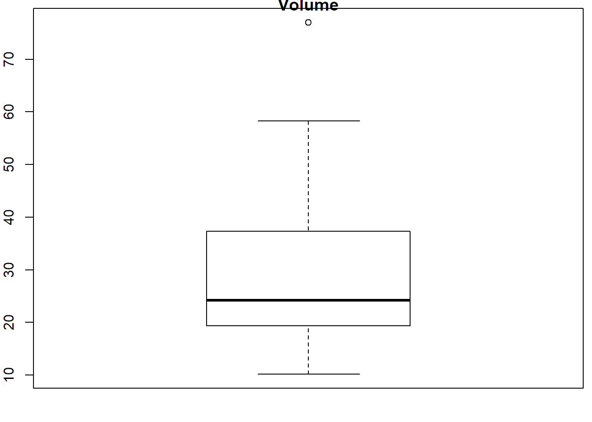

Download the GitHub repo.
Create a new R script in RStudio (File → New File → R Script).
Copy the questions below (all of which begin with the # character so RStudio will interpret them as a comment) into your script. Under each question, write R code. Run each line of R code as you enter it (press the Run button or ctrl+enter) to make sure it works.
Remember to save your script periodically to avoid losing work if RStudio crashes.
If you get stuck, click on the 'hint' link, or the question number to see the answer. Click again to hide.
If you have any questions or problems, please feel free to email the instructor.
Some of the functions you may want to use in this exercise include:
read.csv()
sample()
sd()
sort()
summary()
table()
tolower()
unique()
class()
data()
head()
hist()
mean()
names()
nrow()
plot()
range()
###############################
#### EXPLORING DATA FRAMES ####
###############################
# R comes with a bunch of sample datasets. To see a list of the main ones in the
# datasets package, run data() without an argument. The 'trees' dataset
# contains measurements of Black Cherry Trees.
# 1. What are the column names of the trees data frame?
names(trees)## [1] "Girth" "Height" "Volume"# 2. How many samples (rows) are in the trees data frame?
nrow(trees)## [1] 31# 3. Write expressions that return the range, mean, and standard deviation of the
# Height column.
range(trees$Height)## [1] 63 87mean(trees$Height)## [1] 76sd(trees$Height)## [1] 6.371813########################
#### BASIC PLOTTING ####
########################
# 4. Make a scatterplot of the tree volume as a function of girth and height. Which
# one looks more correlated?
plot(x=trees$Girth, y=trees$Volume, pch=16)
plot(x=trees$Height, y=trees$Volume, pch=16)
Visually it looks like tree girth is more tightly correlated with canopy volume. Perhaps that's why foresters are always measuring DBH (diameter breast height).
# 5. Create a box-and-whiskers plots of the Volume column.
boxplot(trees$Volume, main="Volume")
##################################
#### DATA FRAME MANIPULATIONS ####
##################################
# 6. A common technique in regression is to scale variables to find non-linear
# relationships. Add two new columns to the trees data frame, i) height squared,
# and ii) log(height).
trees$HeightSquared <- trees$Height ^ 2
trees$HeightLog <- log(trees$Height)
head(trees)## Girth Height Volume HeightSquared HeightLog
## 1 8.3 70 10.3 4900 4.248495
## 2 8.6 65 10.3 4225 4.174387
## 3 8.8 63 10.2 3969 4.143135
## 4 10.5 72 16.4 5184 4.276666
## 5 10.7 81 18.8 6561 4.394449
## 6 10.8 83 19.7 6889 4.418841You could also use the transform() function, or the mutate() function from the dplyr package.
# 7. Randomly select 80% of the samples (rows) from the trees data frame, and save them
# as a new object called trees_training.
samp_size <- round(0.8 * nrow(trees))
samp_size## [1] 25idx <- sample(1:nrow(trees), size=samp_size, replace=FALSE)
idx## [1] 25 30 19 15 3 12 28 26 5 18 9 24 2 27 22 31 16 13 10 20 29 14 8
## [24] 4 6trees_training <- trees[idx, ]
nrow(trees_training)## [1] 25#############################
#### IMPORTING CSV FILES ####
#############################
# 8. Import the csv file ca_celltowers.csv from the data folder (in the exercises
# folder), saving the result as ca_celltowers_df.
ca_celltowers_df <- read.csv("data/ca_celltowers.csv")# 9. How many cell towers are saved in the table? How many licensed cell tower
# companies are represented?
nrow(ca_celltowers_df)## [1] 1227unique(ca_celltowers_df$LICENSEE)## [1] NEW CINGULAR WIRELESS PCS, LLC
## [2] Cellco Partnership
## [3] SACRAMENTO VALLEY LIMITED PARTNERSHIP
## [4] FRESNO MSA LIMITED PARTNERSHIP
## [5] SANTA BARBARA CELLULAR SYSTEMS, LTD.
## [6] GTE MOBILNET OF SANTA BARBARA LIMITED PARTNERSHIP
## [7] Los Angeles SMSA Limited Partnership
## [8] WWC License L.L.C.
## [9] CAGAL CELLULAR COMMUNICATIONS CORPORATION
## [10] GTE MOBILNET OF CALIFORNIA LIMITED PARTNERSHIP
## [11] CALIFORNIA RURAL SERVICE AREA #1, INC.
## [12] RENO CELLULAR TELEPHONE COMPANY
## [13] CALIFORNIA RSA NO. 4 LIMITED PARTNERSHIP
## [14] Fresno MSA Limited Partnership
## [15] Los Angeles SMSA Limited Partnership
## [16] SLO CELLULAR, INC. D/B/A CELLULAR ONE OF SAN LUIS OBISPO
## [17] VISALIA CELLULAR TELPHONE COMPANY
## [18] Sacramento Valley Limited Partnership
## [19] REDDING MSA LIMITED PARTNERSHIP
## [20] MODOC RSA LIMITED PARTNERSHIP
## [21] Commnet of Nevada, LLC
## [22] California RSA No. 3 Limited Partnership
## [23] Abraham Divestiture Company LLC
## [24] Verizon Wireless (VAW) LLC
## [25] Accessible Wireless, LLC
## 25 Levels: Abraham Divestiture Company LLC ... WWC License L.L.C.There are 25 unique licensed cell tower companies.
#################
#### QUERIES ####
#################
# 10. The built-in iris data frame has sepal and petal measurements for three
# species of flowers. Create a data frame that contains every 10th row of iris.
idx <- seq(from=1, to=nrow(iris), by=10)
idx## [1] 1 11 21 31 41 51 61 71 81 91 101 111 121 131 141iris_everytenth <- iris[idx,]# 11. Create a data frame that stores just the Petal measurements (length and width)
# for the species virginica.
virginica_petal <- iris[iris$Species == "virginica", c("Species", "Petal.Length", "Petal.Width")]
summary(virginica_petal)## Species Petal.Length Petal.Width
## setosa : 0 Min. :4.500 Min. :1.400
## versicolor: 0 1st Qu.:5.100 1st Qu.:1.800
## virginica :50 Median :5.550 Median :2.000
## Mean :5.552 Mean :2.026
## 3rd Qu.:5.875 3rd Qu.:2.300
## Max. :6.900 Max. :2.500# 12. Modify the expression above to create a data frame of petal measurements for
# all species other than virginica.
setosa_versicolor_petal <- iris[iris$Species != "virginica", c("Species", "Petal.Length", "Petal.Width")]
summary(setosa_versicolor_petal)## Species Petal.Length Petal.Width
## setosa :50 Min. :1.000 Min. :0.100
## versicolor:50 1st Qu.:1.500 1st Qu.:0.200
## virginica : 0 Median :2.450 Median :0.800
## Mean :2.861 Mean :0.786
## 3rd Qu.:4.325 3rd Qu.:1.300
## Max. :5.100 Max. :1.800